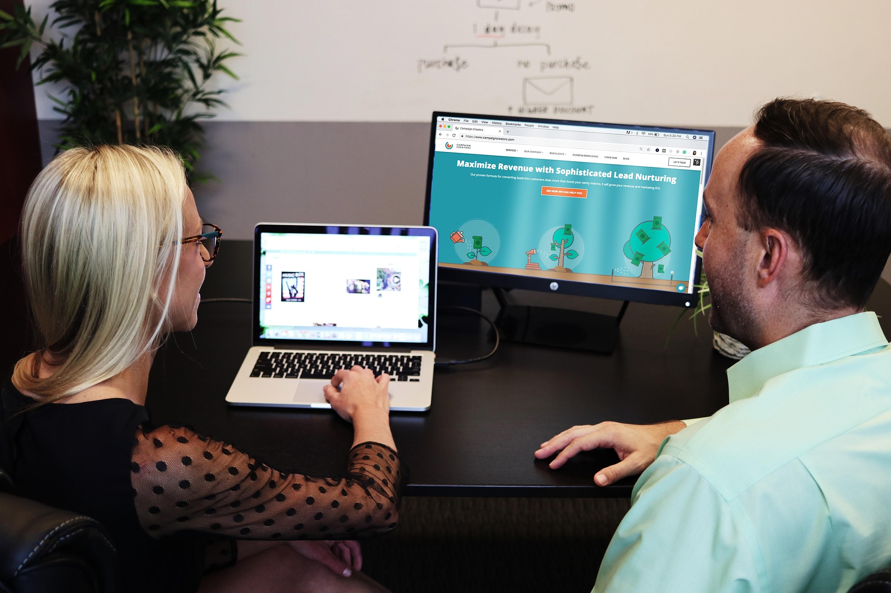

1. Histoire, mission et valeurs de la garderie
Histoire
La Garderie Les Explorateurs est née d’un rêve simple : offrir aux enfants un espace chaleureux où ils peuvent grandir, s’épanouir et découvrir le monde à leur rythme. Depuis sa création, la garderie s’est engagée à créer un environnement sécuritaire, stimulant et profondément humain. Chaque détail — des couleurs des murs aux activités quotidiennes — a été pensé pour favoriser la curiosité naturelle des enfants.
Au fil des années, nous avons bâti une relation de confiance avec les familles de notre communauté. Cette confiance est le cœur de notre histoire : une histoire faite de sourires, de progrès, de petites victoires quotidiennes et d’un profond respect pour chaque enfant qui franchit nos portes.
Mission
Notre mission est d’offrir un milieu éducatif où chaque enfant se sent vu, entendu et valorisé. Nous croyons que les premières années de vie sont essentielles, et nous nous engageons à accompagner chaque enfant dans son développement global : social, émotionnel, cognitif et moteur.
Nous voulons que chaque journée passée chez Les Explorateurs soit une occasion d’apprendre, de jouer et de grandir dans un climat de bienveillance et de sécurité.
Valeurs
Nos valeurs reposent sur trois piliers :
- Respect : accueillir chaque enfant dans son unicité.
- Bienveillance : offrir un environnement doux, sécuritaire et encourageant.
- Découverte : stimuler la curiosité et l’envie d’apprendre à travers des activités variées.
Ces valeurs guident chacune de nos décisions et façonnent l’expérience que nous offrons aux familles.
2. Présentation de l’équipe éducative
Notre équipe est composée de professionnels passionnés qui ont à cœur le bien-être et le développement des enfants. Chaque membre apporte une expertise unique, mais tous partagent la même vision : créer un environnement où les enfants se sentent aimés, soutenus et encouragés.
Les éducatrices et éducateurs de la garderie sont formés pour accompagner les enfants dans toutes les étapes de leur développement. Ils observent, écoutent, encouragent et adaptent leurs interventions selon les besoins de chaque enfant. Leur présence rassurante et leur approche positive créent un climat de confiance essentiel à l’apprentissage.
Ensemble, notre équipe forme une grande famille où la collaboration, la communication et la passion pour l’éducation sont au centre de tout. Nous croyons que pour bien prendre soin des enfants, il faut d’abord prendre soin de ceux qui les accompagnent chaque jour.

3. Valeurs ou expertise de l’entreprise
La Garderie Les Explorateurs se distingue par une approche pédagogique moderne, centrée sur le développement global de l’enfant. Nous combinons des méthodes éducatives reconnues avec des activités créatives, sensorielles et motrices pour offrir une expérience riche et équilibrée.
Notre expertise repose sur une compréhension profonde des besoins des tout-petits : besoin de sécurité, de mouvement, de jeu, d’exploration et d’affection. Nous créons des activités adaptées à chaque groupe d’âge, en respectant le rythme individuel de chaque enfant.
Nous mettons également l’accent sur la communication avec les parents. Grâce à un suivi régulier, des échanges transparents et une collaboration constante, nous construisons un partenariat solide avec les familles. Cette approche nous permet d’offrir un accompagnement cohérent, harmonieux et personnalisé.
Nous nous engageons toujours a vous servir